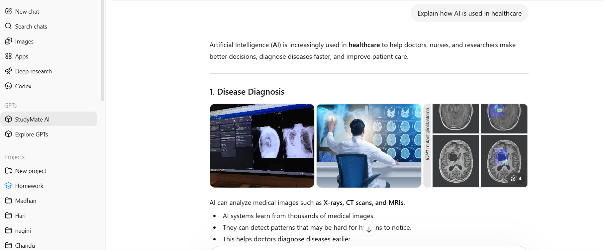
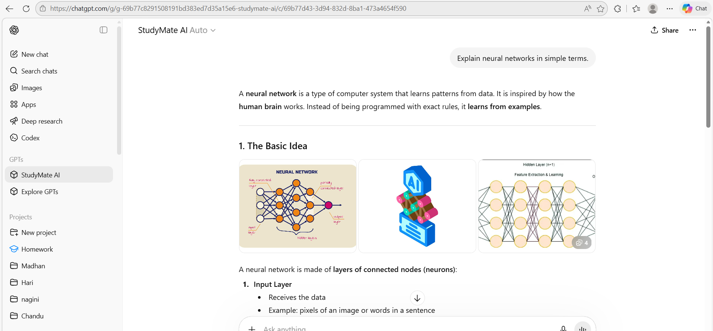

A hands-on lab where I tested how AI tools respond to prompts and instructions, applied a design thinking framework, and used what I learned to design and test a working custom GPT study assistant — StudyMate AI.

One of my early prompt tests, comparing how an LLM explains AI's role in healthcare.
My first artifact showed I can research and organize a large body of information. This one shows something different: that I can actually build with AI tools — test how they behave, apply a real design process to a problem, and end up with something a user could open and use, not just a writeup.
For a hiring manager evaluating applied AI/product skills, I think that gap matters. A lot of people can explain what a large language model is. Fewer have actually sat down, tested how prompt wording changes the output, and used that understanding to design something functional for a real user.
Four stages: test how AI tools respond, apply a design framework, build a prototype, then test it against real scenarios.
Understanding how wording changes what an AI actually returns.
I gave ChatGPT three related prompts about AI in healthcare — varying only the angle and specificity — and evaluated the responses on clarity, accuracy, relevance, and depth. The wording shift alone changed which examples the model reached for: one version leaned into medical imaging, another into hospital administration.
Testing how a specialized assistant handles follow-up instruction.
I pushed a custom GPT through a sequence of follow-ups — asking it to summarize, improve its own answer, handle a "what if," explain its own reasoning, and recap the conversation. It adapted cleanly at each step, which told me something concrete about how instructable these systems are when you steer them deliberately instead of asking one flat question.
Seeing how AI organizes a research topic, not just answers a question.
Using STORM AI on "Artificial Intelligence in Education," I watched the tool break the topic into structured subtopics — personalized learning, automated grading, AI tutoring — combining retrieval with generation to build something closer to an outline than a single answer.
Turning what I'd learned into an actual product decision.
I ran the five-stage design thinking process — empathize, define, ideate, prototype, test — to design StudyMate AI, a custom GPT built to help students summarize study material, get plain-language explanations of complex topics, and generate practice quiz questions before exams.
Challenge: Early prompt tests produced answers that were technically correct but inconsistent in focus — the same question about AI in healthcare returned very different emphases depending on phrasing, which made it hard to know which response to trust as "the" answer.
Solution: I stopped treating the first response as final and instead ran multiple phrasings side by side against fixed criteria (clarity, accuracy, relevance, depth) before drawing conclusions. That same discipline — test before trusting an output — carried into how I evaluated StudyMate AI once it was built, rather than assuming the first working version was good enough.

StudyMate AI generating practice quiz questions during testing.
Asked it to summarize a machine learning topic — produced a clear, structured summary.
Asked it to write multiple-choice questions on artificial intelligence — it did, correctly formatted.
Asked it to explain a complex idea in plain language — it simplified effectively without losing accuracy.
This artifact shows I can move past just describing AI tools and actually build with them — testing behavior, applying structured design thinking, and shipping something a real user can open and test. That's the difference between talking about AI and being able to ship it.
Instead of treating "prompting" as an afterthought, I treated it as the actual variable under test — comparing outputs side by side before ever getting to the build stage. That habit of testing inputs before trusting outputs carried directly into how I evaluated StudyMate AI once it existed.
For a hiring manager building AI-powered products, this shows I can operate across the full loop — test a model's behavior, design around real user needs, prototype quickly, and evaluate whether the result actually works, not just whether it sounds right.
Prompt wording is a design decision, not an afterthought. The same underlying question produced meaningfully different answers depending on how it was framed — that changed how carefully I write prompts going forward.
Design thinking works even for a "small" AI project. Running the full empathize-to-test cycle on something as small as a study assistant forced me to justify each feature against an actual user need, instead of adding features because they were technically possible.